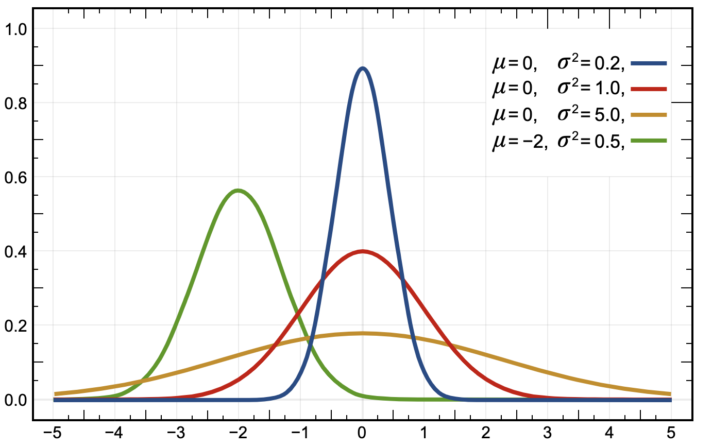

机器学习中, 为了抑制过拟合, 在一些模型(线性回归)中, 采用L1或者L2正则, 是常见的方法.
那么, 为什么L1与L2正则可以有抑制过拟合的作用, 它们之间又有什么差别呢, 下面来进行具体的阐述.
前言
在机器学习中, 过拟合是一个常见的问题, 所谓过拟合, 通俗来讲, 就是一个模型在训练集上训练后, 在训练集上可以有很好的表现, 但是在验证集或者测试集上表现很差.
评判过拟合一般也没有什么特别明确的标准, 可以用一些评估指标来进行判别. 假设我们在训练集上训练模型, 在验证集上调整超参数, 最后在测试集上看模型表现, 在一份数据上, 两次训练得到的结果(评估指标为准确率)如下:
| 训练集 | 验证集 | 测试集 | |
|---|---|---|---|
| 模型一 | 0.90 | 0.70 | 0.60 |
| 模型二 | 0.75 | 0.70 | 0.65 |
单独看测试集, 当然是模型二更好, 这没得说. 然鹅比较科学的做法, 是在确定模型训练得不错以后, 再到测试集上看模型表现. 那么如果在只看训练集和验证集的评估指标时, 如何判定哪个模型”大概率”更好呢? 上面的数据虽然是编的, 但是在本宝宝有限的建模经验中, 也可以说是经常遇到这种情况了, 即两个模型验证集上准确率相当(差距很小), 但训练集上差距较大. 这时候怎么选, 如果是没有太理解过拟合的同学, 可能会选择模型一, 验证集准确率一样, 训练集准确率高的更好不是很自然的事情吗♪(^∇^*) 但是这就是一个典型的过拟合表现, 即训练集和验证集的差距(gap)过大. 所以, 当两个模型在验证集上表现相当时, 选训练集上评估指标小的那个, 对应过拟合程度更小, 才是比较稳妥的做法,
上面通过一个小例子, 大致说明了过拟合的表现, 那么, 如何抑制过拟合呢? 其实我一直在用”抑制”这个词, 而没有用”防止”或者”消除”这样的词, 因为过拟合在很多时候是难以避免的, 主要原因有二:
原因一:
造成过拟合的源头可能有多个, 比如数据本身, 模型结构, 训练过程等, 难以把各方面都做得完美.
原因二:
过拟合的反面就是欠拟合, 通过一些比较极端的方法, 确实可以消除过拟合, 但此时很可能达到了欠拟合的状态.
而通常稍微过拟合的状态下, 比欠拟合状态下的模型表现要好一些.
一般有如下一些方法可以抑制过拟合:
增大数据量.
增大训练样本总是没错的, 但是有时候不是想增加就能增加的.
简化模型结构.
比如在GBDT中用更少的树, 在MLP中用更少的隐藏层.
调节正则参数.
比较常见的, 就是L1和L2正则参数了.
先说一下神马是L1和L2正则参数:
上式是损失函数的一般形式, 其中第一项为关于学习目标$y$与模型预测$f(x)$的误差, 第二项为关于模型的正则损失项$\Omega(f)$.
这里假设$f$为线性模型$f(x)=w_1x_1+w_2x_2+\cdots$, $\Omega$为L1正则, 那么:
若$\Omega$为L2正则:
下面就来说为什么L1和L2正则, 可以抑制过拟合.
抑制过拟合
首先来观察L1与L2正则在损失函数中的表达式:
单看正则损失项, 对于单个参数$w_i$来说, L1正则损失为一个关于$y$轴的V型函数, L2正则损失为一个二次凸函数. 它们都有一个共同点, 即$w_i$越靠近0, 正则损失越小.
也就是说, 由于L1和L2正则项的存在, 会使得原本的参数有向0靠拢的趋势, 而这为什么能抑制过拟合呢? 这里仍然举一个栗子来进行说明, 假设有一个线性回归模型:
并假设原本的数据是人为产生的, 产生的式子为:
即只需要一个变量$x_1$就能够拟合$y$, $x_1$与$x_2$为高度相关. 此时若仍然使用(1)式去进行拟合, 且只使用平方误差作为损失函数(不添加正则损失项), 会得到怎么样的结果呢? 可能会完全正确拟合:
也可能得到:
还有可能得到:
这里就不更多地列举了, 想说的是, 当线性回归的特征中存在相关性(或多重共线性)时, 可以有多种结果可以达到相似的损失函数值.
从结果来看, 上面三个模型, 好像都能够达到相同的结果呀, 没问题呀.
但是在真实的场景中, 数据往往是不完全稳定的, 可能会随着时间发生一些变化, 而且可能会出现一些奇异值(远离数据中心). 从统计的角度来看, $x_1$与$x_2$都可以看做随机变量, 对于(1)式和(2)式, 由于随机变量系数较小, 对应的, 其结果$y$的方差也会较小; 而(3)式由于系数较大, 尽管期望是一致的, 但方差却成倍地被放大.
方差大意味着什么呢, 其实就是不稳定. 这里举一个实际的栗子, 假如在测试集中, 某个样本的$y$为$2.0$, 对应$x_1$为$1.1$, $x_2$为$1.0$, 使用平方误差$(1/2)(y-\hat{y})^2$那么对应不同模型的结果与误差为:
也就是说, 如果在未来出现了一些偏离训练集模式的数据, 那么这种误差对于(2)式和(3)式来说, 还在可接受范围内, 而对于(4)式来说, 误差会被成倍放大.
所以, 这里知道了, 虽然在训练集上可能三个模型的损失误差是相当的, 对应它们的模型期望相同, 但是前面两个模型的方差更小, 更加稳定, 或者说, (4)式对应的模型存在比较严重的过拟合.
现在来看看, 如果加入正则损失项, 会有什么变化吧. 假设现在训练集中有一个样本, $y$为$2.0$, $x_1$为$1.0$, $x_2$为$1.0$.
先试试加入L1正则损失项:
再来看加入L2正则损失项:
从上面可以很容易看出, 在加了正则损失项以后, 即使各模型能够得拟合得到一样的结果, 但是系数更小(向0靠拢)的模型, 整体损失会更小.
综上, 结合具体的栗子, 可以知道怎样的模型, 会容易过拟合. 同时也说明了使用正则损失项以后, 能够有效地避免这样的情况, 即模型参数向0靠拢, 那么进一步, L1和L2有什么特点和区别呢, 下面来进行讲解.
L1与L2的由来
在上一节中, 是将L1和L2正则的形式, 直接搬了出来, 其实在一些经典的统计模型(如逻辑回归)中, 是可以通过一些基本假设, 从而推导得到的, 下面就用逻辑回归来进行演示.
关于线性模型的一些相关理论, 可以看一下我的这篇讲解. 在统计中, 可以分为频率学派和贝叶斯学派, 其中频率学派讲求从观察到的现象, 来总结规律, 通俗来讲, 看到的数据是什么样的, 那就是什么样的. 而贝叶斯学派表示, 不能完全相信已观察的数据, 因为现有数据可能并不能代表总体数据, 需要给出先验信息.
具体说来, 比如对逻辑回归模型进行优化, 如果是频率学派来做, 那么就会首先写出模型的似然函数, 然后根据MLE(极大似然估计), 来进行模型参数的估计和学习.
现在换贝叶斯学派来做, 说这样还不够, 模型参数本身应该满足一些先验分布$P(w)$, 再根据大名鼎鼎的贝叶斯公式:
可得:
由于在优化过程中$P(x;y)$可以看做常量, 故省去. 上式即为MAP(最大后验估计), 在原本的似然分布的基础上, 增加了一个先验分布$P(w)$, 对应$P(w|x;y)$称为后验分布.
同时, 若计算得到的后验分布的形式与先验分布, 在形式上一直(比如都是正态分布), 那么称该先验分布为对应似然分布的共轭分布. 这里稍微说一下共轭分布的好处, 由于先验分布与后验分布形式一致, 那么这一次由一批样本经过计算得到的后验分布, 在下一次另一批样本中, 可以当做其先验分布, 从而实现了可以增量计算. 常见的共轭分布, 比如有伯努利分布与贝塔分布, 多项式分布与狄利克雷分布.
现在来看一个具体的栗子, 假设逻辑回归的先验分布为正态分布, 则:
可以看到在对MAP做了负对数后, 就是在原本没有加先验信息对应的损失函数后, 增加了$\lambda w^2$这一项, 就是平时见到的L2正则项.
而如果假设先验分布是拉普拉斯分布, 则:
这就是L1正则项的形式.
上面通过介绍贝叶斯学派的做法, 由MLE到MAP, 再通过具体的栗子说明了L1与L2正则的由来, 下面具体讲解L1与L2正则的特点与区别.
L1倾向于稀疏解
前面已经说到了, L1和L2都能够使得模型参数向0靠拢, 但是要说它们之间最大的区别, 可能就是L1相比L2更加能够使得模型参数具有稀疏性.
先问是不是, 在考虑为什么.
这里仍然使用一个线性回归的小栗子, 来说明L1相比L2会使得模型参数稀疏(等于0).
仍然仿照之前的做法, 假设有一个线性回归模型:
并假设原本的数据是人为产生的, 产生的式子为:
即只需要一个变量$x_1$就能够拟合$y$, $x_1$与$x_2$为高度相关. 此时若仍然使用(5)式去进行拟合, 且只使用平方误差作为损失函数, 并分别使用L1与L2正则, 会得到怎么样的结果呢?
首先考虑L2正则, 在拟合$y$值完全正确的情况下, $x_1$与$x_2$的系数有多种组合:
从上面的几个模型对应的损失, 可以发现, 当系数集中在某个变量上时, 损失较大, 而当系数分摊到各个变量时, 损失较小. 其实$y=0.6x_1+1.2x_2$应该就是这里损失最小的模型, $x_1$与$x_2$高度正相关, 单位$x_2$对$y$造成的影响是$x_1$的两倍, 那么对应其在模型中的权重系数, $x_2$就是$x_1$的两倍.
是的, L2的特点是让模型参数向0靠拢, 同时会尽可能地按照各个自变量对因变量的贡献(影响), 来将权重系数(参数)分配给它们, 使得权重系数比较均匀.
接着来考虑L1正则, 同上, 在拟合$y$值完全正确的情况下, $x_1$与$x_2$的系数有多种组合:
先说结论, $y=1.5x_2$是这里L1下的最优模型. 在L1的眼中, 如果发现某个变量($x_1$), 能够被一个更强的变量$x_2$代替掉, 那么它不会像L2那样仍然分一些权重系数给相对弱的变量, 而是会直接将其系数变为0, 以使得正则损失最小. 当然, L1正则将某个参数变为0, 也不一定是这个参数有一个上位替代, 也可能是这个参数对应的变量本身不显著.
从上面的小栗子可以看得出来, L1好像相比L2确实更容易使得模型参数稀疏, 那么为什么呢? 这里从三个角度来进行解释.
先验分布
在上文中已经说过, L1正则可以由拉普拉斯分布得到, L2正则可以由正态分布得到, 而正态分布一般来说是长这样的:

拉普拉斯分布长这样:

对比这两个分布, 可以发现, 在靠近期望(比如0)时, 对于正态分布来说, 相对比较平缓, 也就是说在期望的附近, 仍然有不小的概率密度分布.
但是对于拉普拉斯分布来说, 期望附近的概率密度分布比较陡峭, 更多的概率集中在期望值那里, 往两侧则迅速下降.
所以, 从先验分布来看, L1正则相比L2正则更容易使模型参数趋向于0.
几何解释
几何解释也是相对直观的一种方法:
上图中, 左边对应L2正则的损失函数, 右边对应L1正则的损失函数. 蓝色误差等高线表示模型损失项, 橙色图形表示正则损失项, $w_1$和$w_2$表示模型参数.
先看蓝色部分, 如果不考虑正则损失, 那么图中的蓝色中心点, 应该是最优模型参数.
再看橙色部分, 对于L2对应的正态分布来说, 正则损失的误差等高线是一个中心在原点的圆; 对于L1对应的拉普拉斯分布来说, 正则损失的误差等高线是一个中心在原点的正方形(侧转45度).
而最优模型参数在哪呢, 或者说可能出现在哪呢? 只可能出现在蓝色的误差等高线和橙色的误差等高线的切点上. 所谓切点, 即两个图像在边缘处有且只有一个公共点(交点).
为什么必须是切点呢, 因为如果假设不是切点(有两个交点), 那么固定其中一个误差等高线不动, 将另外一个误差等高线往其中心缩小, 那么在这个过程中, 整体的损失函数必然是在下降的, 所以这就是必须是切点的原因.
现在明白了最优点可能出现在两个误差等高线的切点处, 分别来看两个正则项的差异. 对L2正则项来说, 正则损失的误差等高线是一个光滑的圆, 其切点出现的位置并不带有任何偏向性, 结合模型损失项的误差等高线, 切点可以出现在各个方向上. 而对于L1正则项来说, 正则损失的误差等高线是”不光滑”的, 在轴的方向上更为突出, 这就会导致切点出现的位置, 更有可能在某个轴上, 对应的就会有其它一些轴的变量参数为0.
其实这里几何解释, 本质上也是两种分布的差异带来的结果.
数学解释
最后, 再用偏数学的方法, 来对L1容易形成稀疏性进行解释.
在给出带正则项的损失函数后, 使用常用的梯度下降法进行优化.
对于L2正则:
一般来说, 正则参数$\lambda$比较小, 学习率$\eta$也小于0, 所以前面一项$(1-\eta\lambda)w_i$可以看做是在对$w_i$做一个缩小, 且$\lambda$越大, 缩小幅度越大, 但并不会直接将其变成0.
再来看L1正则, 严格意义上$|w_i|$在0点不可导, 所以采用分段优化:
当$w_i\le0$时:
当$w_i>0$时:
观察上面的结果, 发现相比L2时每次迭代进行缩放, 在L1这里每次迭代会直接用相加或相减正则参数, 来向0靠拢. 同时由于分段优化的条件, 当模型损失项的梯度作用小于正则项梯度, 参数更新越过0值时, 会被直接置为0, 即损失函数极小值(最小值)出现在边界0处. 此后, 若模型损失项的梯度的绝对值一直小于正则项梯度绝对值时, 对应模型参数将会被固定在0处:
以上, 就是关于L1为什么相比L2更容易形成稀疏性的数学解释了. 这里再用通俗的话来表述一遍, 对于L1正则来说, 就好像在0附近, 有一块强力磁铁, 这块磁铁比较特殊, 它对于任何位置的参数, 吸引力是一样的, 但是一旦当参数被吸附到0点, 除非有比较强大的动能(模型损失梯度), 来帮助参数脱离磁铁, 否则难以脱身. 这样说, 会不会更加通俗易懂了呢♪(^∇^*)
小结
以上, 便是L1与L2正则的全部内容了, 通过介绍机器学习中的过拟合现象, 引入L1与L2正则方法来抑制过拟合. 然后进一步阐述了L1与L2的特点与区别, 并详细说明了为什么L1相比L2, 更容易得到稀疏解(模型参数).
在真实的场景中, L1和L2是可以混用的, 并且由于在大数据场景下, 由于特征非常多, 模型可能也很复杂, 这时候使用L1使得模型参数稀疏化, 会带来一些工程上的便利. 不过L1正则也不是在仍和场景下, 都能够给模型参数带来稀疏性, 而这个问题, 将会在以后介绍FTRL时再进行讨论.